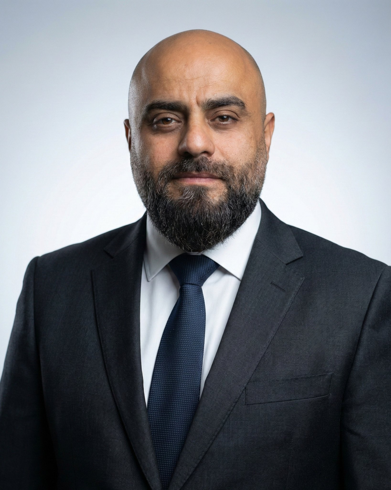
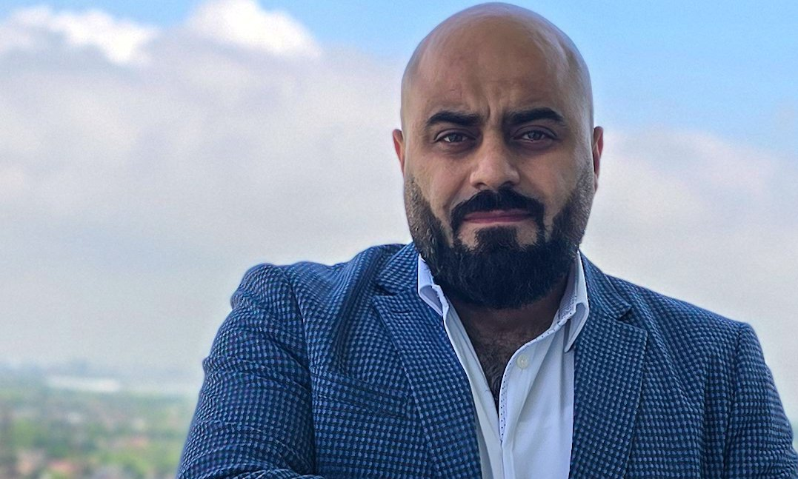

Houssam Harwash is a project management and marketing professional based in Toronto, Canada. His career spans three countries and two industries, and one rule runs through all of it: plan it properly, then execute it precisely.
Today his focus is project management, operations, and marketing, with a standing commitment to humanitarian work.
He studied economics at Damascus University. When the war displaced families around him, he organized help himself: finding homes for families with nowhere to go, and getting food and medical aid to them, funded by private people who trusted him to deliver it.
Supporting people in their hardest moments is not a chapter in his story. It is the story. It is the same drive he brings to humanitarian work today, wherever in the world it is needed.
From 2013 to 2018 he was Projects and Planning Division Manager at Abrican for Oil and Gas Services in Khobar, running projects, tenders, and purchase orders on Saudi Aramco contracts around Dhahran, through Aramco's own systems.
His work earned a Letter of Appreciation from Aramco's South Ghawar Maintenance Services Division.
Advanced Diploma in Business Administration from Sheridan College, High Honour Graduate with a 3.93 GPA, and a first place finish in a strategic business simulation ranked in the Global Top 50.
PMP®. Chartered Marketer. Licensed Ontario realtor. And in 2019, co-founder of Harwash Inc in Toronto with his brother Osama, a business rated 4.9 stars across more than 900 Google reviews, where he leads operations, marketing, and business development.

A father of three.
Everything he builds, he builds for them.
His Sheridan portfolio includes an original TikTok usage study with survey research and Looker Studio dashboards, brand and campaign case analyses (Syncapse, Shaw Media, Anheuser-Busch, Uber vs Taxi), a full marketing plan, a B2B digital marketing campaign, and agency pitch work.